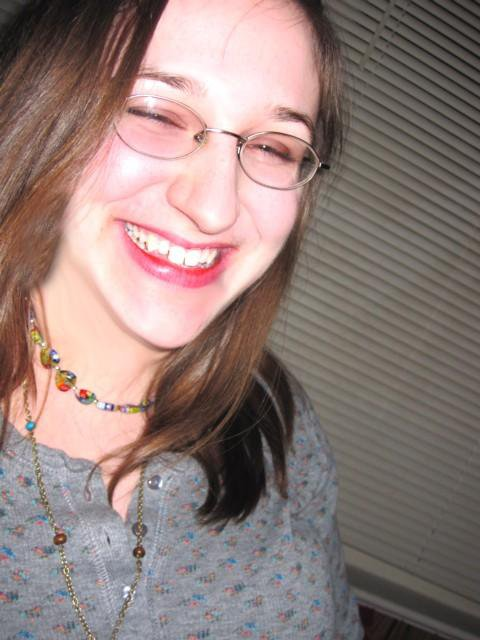
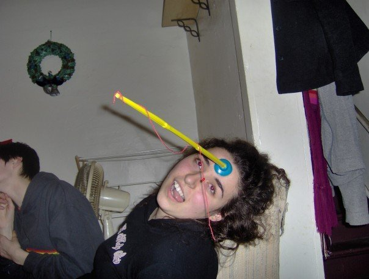
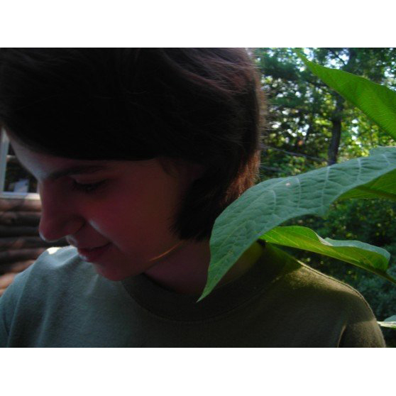
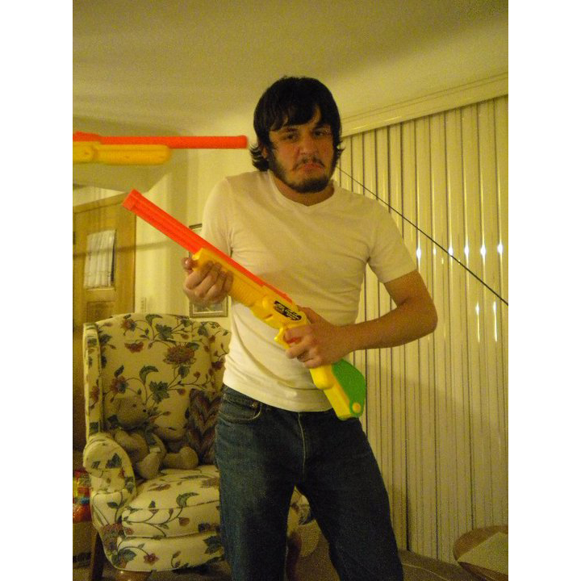
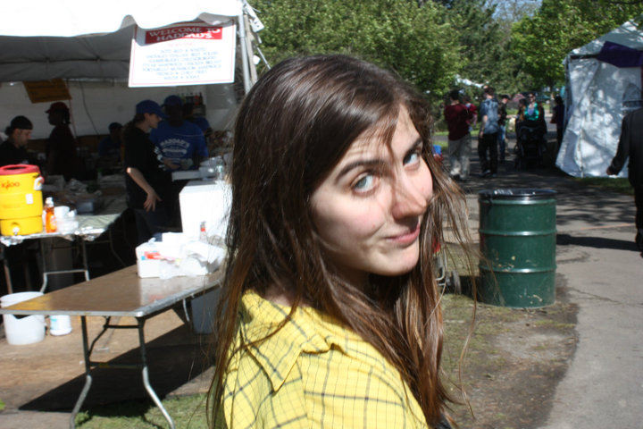

House Members & Officers
Born in the dark streets of Jakarta, Indonesia, Sullivan Haryono Kidder has always lived a life of morbid curiosity and boundless aspirations. Seeking escape from his sultry and tropical home, he traveled to gelid Rochester, NY in search of peace and justice. Pursuing a major in Electrical & Computer Engineering and a minor in Economics, Sullivan hopes to unravel the secrets of the human experience, cosmic exploration, and liquid mountaineering (youtube it). A proud XΦ brother and a DJ at the WRUR station, Sullivan spends most of his time in quiet meditation. He enjoys consuming an exorbitant quantity of tea, discussing the implications of alternate realities, and doing silly things with loved ones. Above all else, Sullivan seeks to engage in activities which highlight the vast beauty and creativity of life.
Sullivan Kidder

Chandler Moran is a junior from Schenectady, New York. She recently switched her major from music to anthropology, although she still sings with the UR Chamber Choir and Women's Chorus. In her spare time she volunteers at a local elementary school and plays the bass guitar. Her favorite foods are anything with bread, cheese, tomato, and garlic in any order.
Chandler Moran

Name: Jordan Cicoria
Major/Class Year: Archaeology, Technology, and History of Structures 2012
Officer position: Logistics
Around Campus: Involved in Drama House (duh!), the Meridian society, Campus Times, and Gamma Phi Beta. On off days, she likes to watch the Labyrinth and save the world.
A description of the Logistics Officer position can be found here.
Jordan Cicoria (Logistics Officer)
I am an octopus that lives under a rock at the bottom of the Pacific Ocean. At night I leave my rock to hunt for small fish and dolphins. My favorite places to hang out include small crevices in the ocean floor and wrecked submarines. I often spit ink all over the place when threatened by predators. My turn-offs include great white sharks and scuba divers.
Derek Murphy
Hayden Ford is currently a Sophmore attending Harvard University, although he takes classes at, lives at and will graduate from the University of Rochester. He loves foreign things in general. He will probably be majoring in History and and minoring in Journalism, but as he often says: "Who knows." He never cracks a smile, unless of course he is happy. His name in Romanian is probably just "Hayden."
Hayden Ford
Adam "Adman the True Patriot" Lanman is currently in his junior year at this noble school. In addition to his demanding responsibilities as the DHouse Financial Officer (and unofficial webmaster), Lanman can often be seen juggling with the Strong Jugglers, TOOPing with The Opposite of People, engaging in astrophysics at the POA library, and using Oxford commas in his bios. He does well in captivity if provided with adequate coffee and foods, juggle-ables, and quiet for doing physics.
A description of the Financial Officer position can be found here.
Adam Lanman (Financial Officer)

Cassandra Donatelli
Major: Officially-CS + a million and a half minors, In Reality-I'm creating my own major
Stuff I Do: Work in the Biochemistry department of Strong and in the HLP lab in the dungeon of Meliora Hall, lights and stage management for Todd, D-house, Class all day and homework late into the night, sometimes I sleep ... it's exciting
Cassandra Donatelli

Sarah Karp is a Senior majoring in Art History and Economics. She spends her time dancing around campus, spreading West Coast/California love, and jumping for joy whenever the sun is out. When not studying the supply and demand curve of an Andy Warhol can of tomato soup or chumming with Dhousers, she can be found with the beautiful members of Ballet Performance Group, ROC the Raas, and Writing Fellows. Sarah loves Drama House and you should love it, too. Skarp is also Master of the House Calendar, so email her with any event scheduling or life questions.
A description of the Scheduling Officer position can be found here.
Sarah Karp (Scheduling Officer)

Eric Cohen is a sophomore at the University of Rochester who hails from Cleveland, OH. He is studying optical engineering as well as biomedical engineering. He is very involved with the theater arts on campus and is a member of In Between the Lines Comedy Improv Troupe and The Opposite Of People Theater Company. His favorite food is ravioli, and he is an avid Green Bay Packers fan.
Eric Cohen

Carolyn Magri is currently a Sophomore studying things that have ceased to matter (history) and things that won't matter in the future (comparative literature). Her voice can be heard on WRUR, and her body can be seen during IBTL performances (beneath a protective layer of clothes and/or skin). To anyone who cares to translate her name, she would like to indicate the tail end of a Buche de Noel in an analogous fashion. She would then be happy to split the rest with you. People tell her that this is why she's a keeper.
Carolyn Magri

I am currently a junior Neuroscience Major. I love dancing, which is why I am involved in two on campus; Radiance and BPG :D Before I came to UR, I went to a boarding high school in Pittsfield, ME. After living in the Northeastern US, I moved to the less Northeastern US, NYC, where I went to Fordham University for 1 year. After that, I transferred to UR, where I now reside in the beeauuteeful Drama House! I like pina coladas and getting caught in the rain. I'm occasionally into yoga, and more than 90% of the time, I have half a brain :D.
Kathy Babko
More soon!